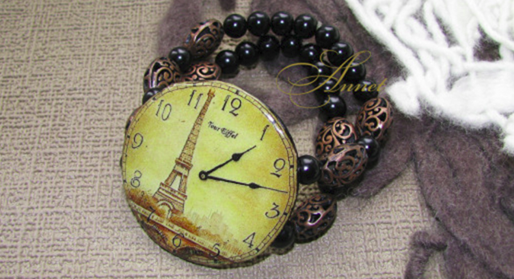
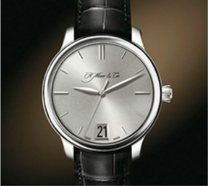
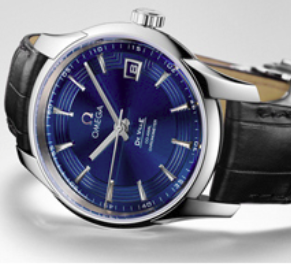
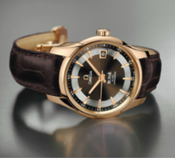

Новая коллекция ручных часов
Навигация с использованием «хлебных крошек», позволяет пользователям знать, где они находятся в иерархической структуре сайта, а так же осуществлять удобную навигацию по нему.иерархической структуре сайта, а так же осуществлять удобную навигацию по нему.
Навигация с использованием «хлебных крошек», позволяет пользователям знать, где они находятся в иерархической структуре сайта, а так же осуществлять удобную навигацию по нему.
Заголовок H3
Навигация с использованием «хлебных крошек», позволяет пользователям знать, где они находятся вНавигация с использованием «хлебных крошек», позволяет пользователям знать, где они находятся в Навигация с использованием «хлебных крошек», позволяет пользователям знать, где они находятся в
Портфолио H4
- 
- 
- 
Навигация с использованием «хлебных крошек», позволяет пользователям знать, где они находятся в Навигация с использованием «хлебных крошек», позволяет пользователям знать, где они находятся вНавигация с использованием «хлебных крошек», позволяет пользователям знать, где они находятся вНавигация с использованием «хлебных крошек», позволяет пользователям знать, где они находятся в
1) Yfdbufwbz
2) Yfdbufwbz
3) Yfdbufwbz
авигация с использованием «хлебных крошек», позволяет пользователям знать, где они находятся вНавигация с использованием «хлебных крошек», позволяет пользователям знать, где они находятся вНавигация с использованием «хлебных крошек», позволяет пользователям знать, где они находятся
Таблица
| Время | тестовое названия | названия1 | названия2 | |
| 12.13.2007 | тестовое названия | колличество | стоимисть | test link |
| 12.13.2007 | тестовое названия | колличество | стоимисть | test link |
| 12.13.2007 | тестовое названия | колличество | стоимисть | test link |
| 12.13.2007 | тестовое названия | колличество | стоимисть | test link |
Заголовок новости
Навигация с использованием «хлебных крошек», позволяет пользователям знать,
Навигация с использованием «хлебных крошек», позволяет пользователям знать,
Навигация с использованием «хлебных крошек», позволяет пользователям знать,Навигация с использованием «хлебных крошек», позволяет пользователям знать,Навигация с использованием «хлебных крошек», позволяет пользователям знать,Навигация с использованием «хлебных крошек», позволяет пользователям знать,